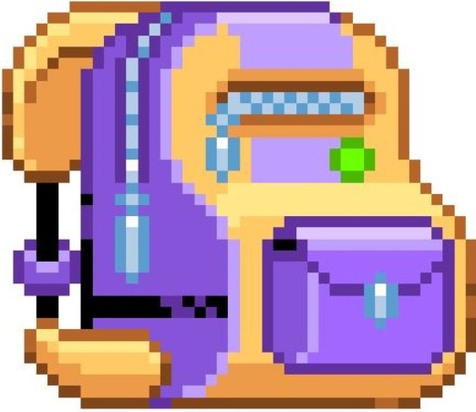
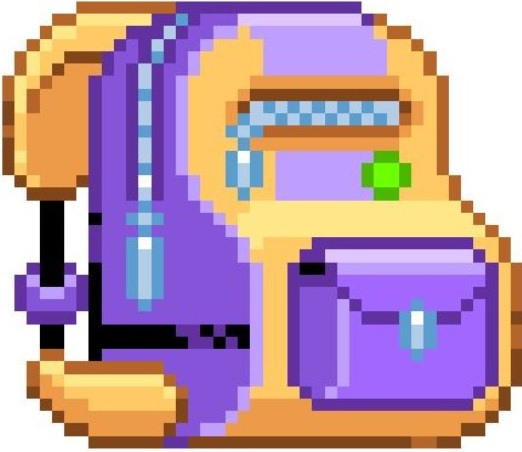

Need a Throwback? Head Straight to Aarhus!
If you need a proper dose of that awesome, fuzzy feeling from your childhood, you have to hit up Aarhus. Forget the popular tourist sites for a minute.
This city is secretly the best spot to just chill and re-experience your youth.
It's all thanks to a few shops that totally nail the nostalgia vibe.
Honestly, Aarhus is less of a destination and more of a perfect, low-stress weekend spent reconnecting with the coolest parts of your past.
Inspired to grab your backpack and chase those memories?
Getting started is easy. To learn more about opening hours, check out the specific inventory, and find the exact location of the nostalgia shops mentioned or maybe just peek at what amazing things people are finding there. Head over to our dedicated subpages now:
Stop putting off that amazing throwback feeling.
Your childhood is waiting for you in Aarhus!


 
